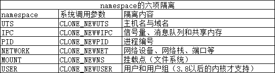

本文先从 Docker 的前身 LXC 说起，介绍 Docker 的基本概念、与 OpenStack 的对比，然后深入剖析 Docker 架构中各个模块的职责，最后附上一组常用的容器操作命令演示。
Docker 的前身：LXC
LXC 为 Linux Container 的简写。它可以提供轻量级的虚拟化，以便隔离进程和资源，而且不需要提供指令解释机制以及全虚拟化的其他复杂性，相当于 C++ 中的 NameSpace。容器有效地将由单个操作系统管理的资源划分到孤立的组中，以更好地在孤立的组之间平衡有冲突的资源使用需求。
与传统虚拟化技术相比，它的优势在于：
- 与宿主机使用同一个内核，性能损耗小；
- 不需要指令级模拟；
- 不需要即时（Just-in-time）编译；
- 容器可以在 CPU 核心的本地运行指令，不需要任何专门的解释机制；
- 避免了准虚拟化和系统调用替换中的复杂性；
- 轻量级隔离，在隔离的同时还提供共享机制，以实现容器与宿主机的资源共享。
总结：Linux Container 是一种轻量级的虚拟化手段。Linux Container 提供了在单一可控主机节点上支持多个相互隔离的 server container 同时执行的机制。Linux Container 有点像 chroot，提供了一个拥有自己进程和网络空间的虚拟环境，但又有别于虚拟机，因为 LXC 是一种操作系统层次上的资源的虚拟化。
LXC 与 Docker 的关系
Docker 并不是 LXC 的替代品，Docker 底层使用了 LXC 来实现。LXC 将 Linux 进程沙盒化，使得进程之间相互隔离，并且能够控制各进程的资源分配。在 LXC 的基础之上，Docker 提供了一系列更强大的功能。
什么是 Docker
Docker 是一个开源的应用容器引擎，基于 Go 语言开发并遵循了 Apache 2.0 协议开源。
Docker 可以让开发者打包他们的应用以及依赖包到一个轻量级、可移植的容器中，然后发布到任何流行的 Linux 服务器上，也可以实现虚拟化。
容器完全使用沙箱机制，相互之间不会有任何接口（类 iPhone 的 App），并且容器开销极其低。Docker 的官方文档可以在 docs.docker.com 查阅。
为什么 Docker 越来越受欢迎
通过镜像启动一个容器。一个镜像是一个可执行的包，其中包括运行应用程序所需要的所有内容——包含代码、运行时、库、环境变量和配置文件。容器是镜像的运行实例，当被运行时有镜像状态和用户进程，可以使用
docker ps查看。容器在 Linux 上本机运行，并与其他容器共享主机的内核。它运行的是一个独立的进程，不占用其他任何可执行文件的内存，非常轻量。虚拟机运行的是一个完整的操作系统，通过虚拟机管理程序对主机资源进行虚拟访问，相比之下需要更多的资源。
Docker 版本
- Docker Community Edition（CE）：社区版；
- Docker Enterprise Edition（EE）：商业版。
Docker 与 OpenStack 的几项对比
Docker 与 OpenStack 的定位并不相同：Docker 是操作系统层面的轻量级虚拟化，面向应用的快速构建、部署与迁移；OpenStack 是 IaaS 层的云管理平台，负责计算、存储、网络等基础设施资源的编排管理。两者更多是互补而非替代的关系。
容器在内核中支持的两种重要技术
Docker 本质就是宿主机的一个进程。Docker 是通过 namespace 实现资源隔离，通过 cgroup 实现资源限制，通过写时复制技术（copy-on-write）实现了高效的文件操作（类似虚拟机的磁盘，比如分配 500G 并不是实际占用物理磁盘 500G）。
namespaces（名称空间）

图中各个命名空间对应的系统调用参数和隔离内容如下：
| namespace | 系统调用参数 | 隔离内容 |
|---|---|---|
| UTS | CLONE_NEWUTS | 主机名与域名 |
| IPC | CLONE_NEWIPC | 信号量、消息队列和共享内存 |
| PID | CLONE_NEWPID | 进程编号 |
| NETWORK | CLONE_NEWNET | 网络设备、网络栈、端口等 |
| MOUNT | CLONE_NEWNS | 挂载点（文件系统） |
| USER | CLONE_NEWUSER | 用户和用户组（3.8 以后的内核才支持） |
control group（控制组）
cgroup 的四大功能：
- 资源限制：限制任务可以使用的资源总量；
- 优先级分配：控制任务之间 CPU、磁盘 IO 等资源的分配优先级；
- 资源统计：统计任务的资源使用量；
- 资源控制：对任务执行挂起、恢复等操作。
Docker 的三个重要概念
镜像（image）
Docker 镜像就是一个只读模板。比如，一个镜像可以包含一个完整的 CentOS 操作系统环境，里面仅安装了 Apache 或用户的其他应用。镜像可以用来创建 Docker 容器。另外，Docker 提供了一个很简单的机制来创建镜像或者更新现有的镜像，用户甚至可以直接从其他人那里下载一个已经做好的镜像来直接使用。
容器（container）
Docker 利用容器来运行应用。容器是从镜像创建的运行实例，它可以被启动、开始、停止、删除。每个容器都是互相隔离的、保证安全的平台。可以把容器看做是一个简易版的 Linux 环境（包括 root 用户权限、镜像空间、用户空间和网络空间等），以及运行在其中的应用程序。
仓库（repository）
仓库是集中存储镜像文件的场所。registry 是仓库注册服务器，实际上注册服务器上存放着多个仓库，每个仓库中又包含了多个镜像，每个镜像有不同的标签（tag）。仓库分为两种：公有仓库和私有仓库。最大的公开仓库是 Docker Hub，存放了数量庞大的镜像供用户下载，国内也有 Docker Pool 等。这里的仓库概念与 Git 类似，registry 可以理解为 GitHub 这样的托管服务。
Docker 的主要用途
官方就是 Build、Ship、Run any app/anywhere——编译、装载、运行，任何 App 在任意地方都能运行。Docker 实现了应用的封装、部署、运行的生命周期管理，只要在 glibc 的环境下，都可以运行。运维生产环境中：Docker 化。
Docker 改变了什么
Docker 改变了应用的封装、部署与运行方式：应用连同依赖环境一起打包成镜像，可以在任何支持 Docker 的环境中一致地运行。
Docker 总体架构
用户使用 Docker Client 与 Docker Daemon 建立通信，并发送请求给后者。Docker Daemon 作为 Docker 架构中的主体部分，首先提供 Server 的功能使其可以接受 Docker Client 的请求；而后 Engine 执行 Docker 内部的一系列工作，每一项工作都是以一个 Job 的形式存在。
Job 的运行过程中，当需要容器镜像时，则从 Docker Registry 中下载镜像，并通过镜像管理驱动 graphdriver 将下载的镜像以 Graph 的形式存储；当需要为 Docker 创建网络环境时，通过网络管理驱动 networkdriver 创建并配置 Docker 容器网络环境；当需要限制 Docker 容器运行资源或执行用户指令等操作时，则通过 execdriver 来完成。而 libcontainer 是一项独立的容器管理包，networkdriver 以及 execdriver 都是通过 libcontainer 来实现具体对容器进行的操作。
当执行完运行容器的命令后，一个实际的 Docker 容器就处于运行状态，该容器拥有独立的文件系统、独立并且安全的运行环境等。
Client/Server 交互视角
再换一个更简单的视角，这个架构清楚地指明了 Server/Client 交互，以及容器和镜像、数据之间的一些联系。
Docker Daemon 就是 Docker 的守护进程，即 Server 端，可以是远程的，也可以是本地的——这就是 C/S 架构，客户端 Docker Client 是通过 REST API 与之通信的。Docker CLI 用来管理容器和镜像：客户端提供一个只读镜像，然后通过镜像可以创建多个容器。这些容器可以只是一个 RFS（Root File System，根文件系统），也可以是一个包含了用户应用的 RFS。容器在 Docker 中只是一个进程，两个进程之间互不可见。
用户不能与 Server 直接交互，但可以通过与容器这个桥梁来交互。由于是操作系统级别的虚拟技术，中间的损耗几乎可以不计。
Docker 架构各模块的功能
主要的模块有：Docker Client、Docker Daemon、Docker Registry、Graph、Driver、libcontainer 以及 Docker container。
Docker Client
Docker Client 是 Docker 架构中用户用来和 Docker Daemon 建立通信的客户端，用户使用的可执行文件为 docker，通过 docker 命令行工具可以发起众多管理 container 的请求。
Docker Client 可以通过以下三种方式和 Docker Daemon 建立通信：tcp://host:port、unix:path_to_socket、fd://socketfd。Docker Client 可以通过设置命令行 flag 参数的形式设置安全传输层协议（TLS）的有关参数，保证传输的安全性。
Docker Client 发送容器管理请求后，由 Docker Daemon 接受并处理请求，当 Docker Client 接收到返回的请求响应并简单处理后，Docker Client 一次完整的生命周期就结束了。当需要继续发送容器管理请求时，用户必须再次通过 docker 可执行文件创建 Docker Client。
Docker Daemon
Docker Daemon 是 Docker 架构中一个常驻在后台的系统进程，功能是：接收处理 Docker Client 发送的请求。该守护进程在后台启动一个 Server，Server 负责接受 Docker Client 发送的请求；接受请求后，Server 通过路由与分发调度，找到相应的 handler 来执行请求。
Docker Daemon 启动所使用的可执行文件也为 docker，与 Docker Client 启动所使用的可执行文件相同，在 docker 命令执行时，通过传入的参数来判别 Docker Daemon 与 Docker Client。Docker Daemon 的架构可以分为：Docker Server、Engine、Job。
Docker Server
Docker Server 在 Docker 架构中是专门服务于 Docker Client 的 Server，该 Server 的功能是：接受并调度分发 Docker Client 发送的请求。
在 Docker 的启动过程中，通过包 gorilla/mux（golang 的类库解析），创建了一个 mux.Router，提供请求的路由功能。在 Golang 中，gorilla/mux 是一个强大的 URL 路由器以及调度分发器。该 mux.Router 中添加了众多的路由项，每一个路由项由 HTTP 请求方法（PUT、POST、GET 或 DELETE）、URL、Handler 三部分组成。
若 Docker Client 通过 HTTP 的形式访问 Docker Daemon，创建完 mux.Router 之后，Docker 将 Server 的监听地址以及 mux.Router 作为参数，创建一个 httpSrv=http.Server{}，最终执行 httpSrv.Serve() 为请求服务。
在 Server 的服务过程中，Server 在 listener 上接受 Docker Client 的访问请求，并创建一个全新的 goroutine 来服务该请求。在 goroutine 中，首先读取请求内容，然后做解析工作，接着找到相应的路由项，随后调用相应的 Handler 来处理该请求，最后 Handler 处理完请求之后回复该请求。
需要注意的是：Docker Server 的运行在 Docker 的启动过程中，是靠一个名为 “serveapi” 的 job 的运行来完成的。原则上，Docker Server 的运行是众多 job 中的一个，但是为了强调 Docker Server 的重要性以及为后续 job 服务的重要特性，将该 “serveapi” 的 job 单独抽离出来分析，理解为 Docker Server。
Engine
Engine 是 Docker 架构中的运行引擎，同时也是 Docker 运行的核心模块。它扮演 Docker container 存储仓库的角色，并且通过执行 job 的方式来操纵管理这些容器。
在 Engine 数据结构的设计与实现过程中，有一个 handler 对象。该 handler 对象存储的都是关于众多特定 job 的 handler 处理方法。举例说明，Engine 的 handler 对象中有一项为 {"create": daemon.ContainerCreate,}，则说明当名为 “create” 的 job 在运行时，执行的是 daemon.ContainerCreate 的 handler。
Job
一个 Job 可以认为是 Docker 架构中 Engine 内部最基本的工作执行单元。Docker 可以做的每一项工作，都可以抽象为一个 job。例如：在容器内部运行一个进程，这是一个 job；创建一个新的容器，这是一个 job；从 Internet 上下载一个文档，这是一个 job；包括之前在 Docker Server 部分说过的，创建 Server 服务于 HTTP 的 API，这也是一个 job，等等。
Job 的设计者，把 Job 设计得与 Unix 进程相仿。比如说：Job 有一个名称，有参数，有环境变量，有标准的输入输出，有错误处理，有返回状态等。
Docker Registry
Docker Registry 是一个存储容器镜像的仓库。而容器镜像是在容器被创建时，被加载用来初始化容器的文件架构与目录。
在 Docker 的运行过程中，Docker Daemon 会与 Docker Registry 通信，并实现搜索镜像、下载镜像、上传镜像三个功能，这三个功能对应的 job 名称分别为 “search”、”pull” 与 “push”。
其中，在 Docker 架构中，Docker 可以使用公有的 Docker Registry，即大家熟知的 Docker Hub，如此一来，Docker 获取容器镜像文件时，必须通过互联网访问 Docker Hub；同时 Docker 也允许用户构建本地私有的 Docker Registry，这样可以保证容器镜像的获取在内网完成。
Graph
Graph 在 Docker 架构中扮演已下载容器镜像的保管者，以及已下载容器镜像之间关系的记录者。一方面，Graph 存储着本地具有版本信息的文件系统镜像；另一方面也通过 GraphDB 记录着所有文件系统镜像彼此之间的关系。
其中，GraphDB 是一个构建在 SQLite 之上的小型图数据库，实现了节点的命名以及节点之间关联关系的记录。它仅仅实现了大多数图数据库所拥有的一个小的子集，但是提供了简单的接口表示节点之间的关系。
同时在 Graph 的本地目录中，关于每一个容器镜像，具体存储的信息有：该容器镜像的元数据、容器镜像的大小信息，以及该容器镜像所代表的具体 rootfs。
Driver
Driver 是 Docker 架构中的驱动模块。通过 Driver 驱动，Docker 可以实现对 Docker 容器执行环境的定制。由于 Docker 运行的生命周期中，并非用户所有的操作都是针对 Docker 容器的管理，另外还有关于 Docker 运行信息的获取、Graph 的存储与记录等。因此，为了将 Docker 容器的管理从 Docker Daemon 内部业务逻辑中区分开来，设计了 Driver 层驱动来接管所有这部分请求。
在 Docker Driver 的实现中，可以分为以下三类驱动：graphdriver、networkdriver 和 execdriver。
graphdriver 主要用于完成容器镜像的管理，包括存储与获取。即当用户需要下载指定的容器镜像时，graphdriver 将容器镜像存储在本地的指定目录；同时当用户需要使用指定的容器镜像来创建容器的 rootfs 时，graphdriver 从本地镜像存储目录中获取指定的容器镜像。在 graphdriver 的初始化过程之前，有 4 种文件系统或类文件系统在其内部注册，它们分别是 aufs、btrfs、vfs 和 devmapper。而 Docker 在初始化之时，通过获取系统环境变量 “DOCKER_DRIVER” 来提取所使用 driver 的指定类型，而之后所有的 graph 操作，都使用该 driver 来执行。
networkdriver 的用途是完成 Docker 容器网络环境的配置，其中包括 Docker 启动时为 Docker 环境创建网桥；Docker 容器创建时为其创建专属虚拟网卡设备；以及为 Docker 容器分配 IP、端口并与宿主机做端口映射，设置容器防火墙策略等。
execdriver 作为 Docker 容器的执行驱动，负责创建容器运行命名空间，负责容器资源使用的统计与限制，负责容器内部进程的真正运行等。在 execdriver 的实现过程中，原先可以使用 LXC 驱动调用 LXC 的接口，来操纵容器的配置以及生命周期，而现在 execdriver 默认使用 native 驱动，不依赖于 LXC。具体体现在 Daemon 启动过程中加载的 ExecDriverflag 参数，该参数在配置文件中已经被设为 “native”。这可以认为是 Docker 在 1.2 版本上一个很大的改变，或者说 Docker 实现跨平台的一个先兆。
libcontainer
libcontainer 是 Docker 架构中一个使用 Go 语言设计实现的库，设计初衷是希望该库可以不依靠任何依赖，直接访问内核中与容器相关的 API。正是由于 libcontainer 的存在，Docker 可以直接调用 libcontainer，而最终操纵容器的 namespace、cgroups、apparmor、网络设备以及防火墙规则等。这一系列操作的完成都不需要依赖 LXC 或者其他包。
另外，libcontainer 提供了一整套标准的接口来满足上层对容器管理的需求。或者说，libcontainer 屏蔽了 Docker 上层对容器的直接管理。又由于 libcontainer 使用 Go 这种跨平台的语言开发实现，且本身又可以被上层多种不同的编程语言访问，因此很难说，未来的 Docker 就一定会紧紧地和 Linux 捆绑在一起。而与此同时，Microsoft 在其著名云计算平台 Azure 中，也添加了对 Docker 的支持，可见 Docker 的开放程度与业界的火热度。暂不谈 Docker，由于 libcontainer 的功能以及其本身与系统的松耦合特性，很有可能会在其他以容器为原型的平台出现，同时也很有可能催生出云计算领域全新的项目。
Docker Container
Docker Container（Docker 容器）是 Docker 架构中服务交付的最终体现形式。Docker 按照用户的需求与指令，定制相应的 Docker 容器。
附：常用操作演示
安装
yum install docker -y
systemctl enable docker
systemctl start docker注意：启动前应当设置镜像源，编辑
/usr/lib/systemd/system/docker.service，这里设置阿里的加速地址（注册阿里云账户，每个用户都有自己的专属加速地址）。
docker.service 的内容如下：
[Unit]
Description=Docker Application Container Engine
Documentation=http://docs.docker.com
After=network.target
Wants=docker-storage-setup.service
Requires=docker-cleanup.timer
[Service]
Type=notify
NotifyAccess=main
EnvironmentFile=-/run/containers/registries.conf
EnvironmentFile=-/etc/sysconfig/docker
EnvironmentFile=-/etc/sysconfig/docker-storage
EnvironmentFile=-/etc/sysconfig/docker-network
Environment=GOTRACEBACK=crash
Environment=DOCKER_HTTP_HOST_COMPAT=1
Environment=PATH=/usr/libexec/docker:/usr/bin:/usr/sbin
ExecStart=/usr/bin/dockerd-current \
--registry-mirror=https://rfcod7oz.mirror.aliyuncs.com \
--add-runtime docker-runc=/usr/libexec/docker/docker-runc-current \
--default-runtime=docker-runc \
--exec-opt native.cgroupdriver=systemd \
--userland-proxy-path=/usr/libexec/docker/docker-proxy-current \
--init-path=/usr/libexec/docker/docker-init-current \
--seccomp-profile=/etc/docker/seccomp.json \
$OPTIONS \
$DOCKER_STORAGE_OPTIONS \
$DOCKER_NETWORK_OPTIONS \
$ADD_REGISTRY \
$BLOCK_REGISTRY \
$INSECURE_REGISTRY \
$REGISTRIES
ExecReload=/bin/kill -s HUP $MAINPID
LimitNOFILE=1048576
LimitNPROC=1048576
LimitCORE=infinity
TimeoutStartSec=0
Restart=on-abnormal
KillMode=process
[Install]
WantedBy=multi-user.target其中 --registry-mirror 的值需要登录自己的阿里云账户获取。
版本查询
docker versionClient:
Version: 1.13.1
API version: 1.26
Package version: docker-1.13.1-96.gitb2f74b2.el7.centos.x86_64
Go version: go1.10.3
Git commit: b2f74b2/1.13.1
Built: Wed May 1 14:55:20 2019
OS/Arch: linux/amd64
Server:
Version: 1.13.1
API version: 1.26 (minimum version 1.12)
Package version: docker-1.13.1-96.gitb2f74b2.el7.centos.x86_64
Go version: go1.10.3
Git commit: b2f74b2/1.13.1
Built: Wed May 1 14:55:20 2019
OS/Arch: linux/amd64
Experimental: false搜索与下载镜像
docker pull alpine # 下载镜像
docker search nginx # 查看镜像
docker pull nginx查看已经下载的镜像
docker imagesREPOSITORY TAG IMAGE ID CREATED SIZE
zxg/my_nginx v1 b164f4c07c64 8 days ago 126 MB
zxg/my_nginx latest f07837869dfc 8 days ago 126 MB
docker.io/nginx latest e445ab08b2be 2 weeks ago 126 MB
docker.io/alpine latest b7b28af77ffe 3 weeks ago 5.58 MB
docker.io/centos latest 9f38484d220f 4 months ago 202 MB导出镜像
docker save nginx > /tmp/nginx.tar.gz删除镜像
docker rmi -f nginx导入镜像
docker load < /tmp/nginx.tar.gz默认配置文件
默认配置文件同样是 /usr/lib/systemd/system/docker.service，内容与上文安装部分给出的一致。这里补充两个常用修改：
- 如果更改存储目录，就添加
--graph=/opt/docker； - 如果更改 DNS（默认采用宿主机的 DNS），用
--dns=xxxx的方式指定。
运行 hello world
这里用 centos 镜像 echo 一个 hello world：
docker run centos echo "hello world"hello world运行一个容器：run
docker run -it alpine sh进入容器后可以执行命令查看目录结构，最后 exit 退出：
/ # ls
bin etc lib mnt proc run srv tmp var
dev home media opt root sbin sys usr
/ # cd tmp
/tmp # exit后台运行（-d 后台运行，--name 添加一个名字）：
docker run -it -d --name test1 alpine
docker psCONTAINER ID IMAGE COMMAND CREATED STATUS PORTS NAMES
ac46c019b800 alpine "/bin/sh" 5 seconds ago Up 3 seconds test1还有一种 --rm 参数，Ctrl+C 退出后容器即被删除，可以测试环境用，生产环境用得少：
docker run -it --rm --name centos nginx运行期间另开一个窗口查看：
CONTAINER ID IMAGE COMMAND CREATED STATUS PORTS NAMES
3397b96ea7bd nginx "nginx -g 'daemon ..." 27 seconds ago Up 25 seconds 80/tcp centos
ac46c019b800 alpine "/bin/sh" 4 minutes ago Up 4 minutes test1Ctrl+C 退出后再查看，该容器已经不在列表中：
CONTAINER ID IMAGE COMMAND CREATED STATUS PORTS NAMES
ac46c019b800 alpine "/bin/sh" 4 minutes ago Up 4 minutes test1如何进入容器
三种方法，上面已经演示了一种。
第一种，需要容器本身的 pid 及 util-linux，不推荐，这里不演示。
第二种，docker attach，不分配 bash 终端的一种实时操作，不推荐——这种操作如果再开一个窗口也能看到操作的指令，所有人都能看到：
docker attach mynginx/ # ls
bin boot dev etc home lib lib64 media mnt opt proc root run sbin srv sys tmp usr var
/ # exit容器停止后再次 attach 会直接报错：
You cannot attach to a stopped container, start it first第三种：docker exec 方式，终端是分开的，推荐：
docker exec -it mynginx sh/ # ls
bin boot dev etc home lib lib64 media mnt opt proc root run sbin srv sys tmp usr var
/ # exit查看进程及删除容器
上面已经演示了 docker ps，加上 -a 参数可以显示所有的容器，包括未运行的：
docker ps -aCONTAINER ID IMAGE COMMAND CREATED STATUS PORTS NAMES
9fc796e928d7 nginx "sh" 4 minutes ago Exited (0) About a minute ago mynginx
ac46c019b800 alpine "/bin/sh" 15 minutes ago Up 15 minutes test1
3bf234febeaa alpine "sh" 17 minutes ago Exited (0) 16 minutes ago youthful_lumiere
ab113c63f0b4 centos "echo 'hello world'" 31 minutes ago Exited (0) 31 minutes ago infallible_torvalds
b326027dcf42 zxg/my_nginx "nginx" 8 days ago Exited (0) 8 days ago my_nginx
4f1f1ca319f2 centos "bash" 8 days ago Exited (137) 8 days ago musing_lichterman
64b4e32991c7 nginx "nginx -g 'daemon ..." 12 days ago Exited (0) 12 days ago mynginx1
aee506fe7b5a alpine "sh" 12 days ago Created infallible_haibt
70620c73b9a0 alpine "sh" 12 days ago Created gallant_volhard
7655cbf87bb0 alpine "sh" 12 days ago Created agitated_brahmagupta
33fb949372e8 fce289e99eb9 "/hello" 12 days ago Created elastic_dijkstra
9de47616aea4 fce289e99eb9 "/hello" 13 days ago Created confident_fermidocker rm 删除一个或多个容器：
docker rm 9fc796e928d79fc796e928d7查看容器详细信息
并不需要进入到容器里面，通过 docker inspect 就可以查看容器的详细信息：
docker inspect mynginx[
{
"Id": "6fc2d091cfe9b0484da3e70db842446bbdfeb7f5e5409c2e40ae21b99498d010",
"Created": "2019-08-07T08:57:48.864538933Z",
"Path": "nginx",
"Args": [
"-g",
"daemon off;"
],
"State": {
"Status": "running",
"Running": true,
"Paused": false,
"Restarting": false,
"OOMKilled": false,
"Dead": false,
"Pid": 119948,
"ExitCode": 0,
"Error": "",
"StartedAt": "2019-08-07T08:57:49.417992182Z",
"FinishedAt": "0001-01-01T00:00:00Z"
},
"Image": "sha256:e445ab08b2be8b178655b714f89e5db9504f67defd5c7408a00bade679a50d44",
"ResolvConfPath": "/var/lib/docker/containers/6fc2d091cfe9b0484da3e70db842446bbdfeb7f5e5409c2e40ae21b99498d010/resolv.conf",
"HostnamePath": "/var/lib/docker/containers/6fc2d091cfe9b0484da3e70db842446bbdfeb7f5e5409c2e40ae21b99498d010/hostname",
"HostsPath": "/var/lib/docker/containers/6fc2d091cfe9b0484da3e70db842446bbdfeb7f5e5409c2e40ae21b99498d010/hosts",
"LogPath": "",
"Name": "/mynginx",
"RestartCount": 0,
"Driver": "overlay2",
"MountLabel": "",
"ProcessLabel": "",
"AppArmorProfile": "",
"ExecIDs": null,
"HostConfig": {
"Binds": null,
"ContainerIDFile": "",
"LogConfig": {
"Type": "journald",
"Config": {}
},
"NetworkMode": "default",
"PortBindings": {},
"RestartPolicy": {
"Name": "no",
"MaximumRetryCount": 0
},
"AutoRemove": false,
"VolumeDriver": "",
"VolumesFrom": null,
"CapAdd": null,
"CapDrop": null,
"Dns": [],
"DnsOptions": [],
"DnsSearch": [],
"ExtraHosts": null,
"GroupAdd": null,
"IpcMode": "",
"Cgroup": "",
"Links": null,
"OomScoreAdj": 0,
"PidMode": "",
"Privileged": false,
"PublishAllPorts": false,
"ReadonlyRootfs": false,
"SecurityOpt": null,
"UTSMode": "",
"UsernsMode": "",
"ShmSize": 67108864,
"Runtime": "docker-runc",
"ConsoleSize": [
0,
0
],
"Isolation": "",
"CpuShares": 0,
"Memory": 0,
"NanoCpus": 0,
"CgroupParent": "",
"BlkioWeight": 0,
"BlkioWeightDevice": null,
"BlkioDeviceReadBps": null,
"BlkioDeviceWriteBps": null,
"BlkioDeviceReadIOps": null,
"BlkioDeviceWriteIOps": null,
"CpuPeriod": 0,
"CpuQuota": 0,
"CpuRealtimePeriod": 0,
"CpuRealtimeRuntime": 0,
"CpusetCpus": "",
"CpusetMems": "",
"Devices": [],
"DiskQuota": 0,
"KernelMemory": 0,
"MemoryReservation": 0,
"MemorySwap": 0,
"MemorySwappiness": -1,
"OomKillDisable": false,
"PidsLimit": 0,
"Ulimits": null,
"CpuCount": 0,
"CpuPercent": 0,
"IOMaximumIOps": 0,
"IOMaximumBandwidth": 0
},
"GraphDriver": {
"Name": "overlay2",
"Data": {
"LowerDir": "/var/lib/docker/overlay2/937140af0aee6c43f04c2d7b72e6b5451a44fef921417e8236d9fe01e9286c7a-init/diff:/var/lib/docker/overlay2/d8e95505fc3894eb30b48e4b0f48ab5e89d99c09a07c79c0b057c611621e31eb/diff:/var/lib/docker/overlay2/b2a6a25974bf17398b698a27208711574be3c69a2cd06658bbe838359f373a27/diff:/var/lib/docker/overlay2/d4610bc89b3ba8ad6ab30ea895fc3a06efff15db493d86ac9bc100e04abbab67/diff",
"MergedDir": "/var/lib/docker/overlay2/937140af0aee6c43f04c2d7b72e6b5451a44fef921417e8236d9fe01e9286c7a/merged",
"UpperDir": "/var/lib/docker/overlay2/937140af0aee6c43f04c2d7b72e6b5451a44fef921417e8236d9fe01e9286c7a/diff",
"WorkDir": "/var/lib/docker/overlay2/937140af0aee6c43f04c2d7b72e6b5451a44fef921417e8236d9fe01e9286c7a/work"
}
},
"Mounts": [],
"Config": {
"Hostname": "6fc2d091cfe9",
"Domainname": "",
"User": "",
"AttachStdin": false,
"AttachStdout": false,
"AttachStderr": false,
"ExposedPorts": {
"80/tcp": {}
},
"Tty": true,
"OpenStdin": true,
"StdinOnce": false,
"Env": [
"PATH=/usr/local/sbin:/usr/local/bin:/usr/sbin:/usr/bin:/sbin:/bin",
"NGINX_VERSION=1.17.2",
"NJS_VERSION=0.3.3",
"PKG_RELEASE=1~buster"
],
"Cmd": [
"nginx",
"-g",
"daemon off;"
],
"ArgsEscaped": true,
"Image": "nginx",
"Volumes": null,
"WorkingDir": "",
"Entrypoint": null,
"OnBuild": null,
"Labels": {
"maintainer": "NGINX Docker Maintainers <docker-maint@nginx.com>"
},
"StopSignal": "SIGTERM"
},
"NetworkSettings": {
"Bridge": "",
"SandboxID": "3ece36008fbc5f3f46d3d251cf803c1478cc14032d74a36747e4ed8a115b81df",
"HairpinMode": false,
"LinkLocalIPv6Address": "",
"LinkLocalIPv6PrefixLen": 0,
"Ports": {
"80/tcp": null
},
"SandboxKey": "/var/run/docker/netns/3ece36008fbc",
"SecondaryIPAddresses": null,
"SecondaryIPv6Addresses": null,
"EndpointID": "898de81d97d54d2b60aeb6cc77ef1b4f9b481d1b72f542faa496494594024eac",
"Gateway": "172.17.0.1",
"GlobalIPv6Address": "",
"GlobalIPv6PrefixLen": 0,
"IPAddress": "172.17.0.3",
"IPPrefixLen": 16,
"IPv6Gateway": "",
"MacAddress": "02:42:ac:11:00:03",
"Networks": {
"bridge": {
"IPAMConfig": null,
"Links": null,
"Aliases": null,
"NetworkID": "2edae9131e77500a56d251b94ab2cdf0bc86f8df9f2453fa46bf4bab2f7be99f",
"EndpointID": "898de81d97d54d2b60aeb6cc77ef1b4f9b481d1b72f542faa496494594024eac",
"Gateway": "172.17.0.1",
"IPAddress": "172.17.0.3",
"IPPrefixLen": 16,
"IPv6Gateway": "",
"GlobalIPv6Address": "",
"GlobalIPv6PrefixLen": 0,
"MacAddress": "02:42:ac:11:00:03"
}
}
}
}
]从输出中的 NetworkSettings.IPAddress 字段可以看到容器的 IP 地址为 172.17.0.3。在宿主机上 curl 这个 IP 地址，访问一下运行情况：
curl 172.17.0.3返回了 nginx 的欢迎页面，说明容器运行正常（中间内嵌的样式与页脚图标部分略）：
<!DOCTYPE html PUBLIC "-//W3C//DTD XHTML 1.1//EN" "http://www.w3.org/TR/xhtml11/DTD/xhtml11.dtd">
<html xmlns="http://www.w3.org/1999/xhtml" xml:lang="en">
<head>
<title>Test Page for the Nginx HTTP Server on Fedora</title>
<meta http-equiv="Content-Type" content="text/html; charset=UTF-8" />
</head>
<body>
<h1>Welcome to <strong>nginx</strong> on Fedora!</h1>
<div class="content">
<p>This page is used to test the proper operation of the
<strong>nginx</strong> HTTP server after it has been
installed. If you can read this page, it means that the
web server installed at this site is working
properly.</p>
<div class="alert">
<h2>Website Administrator</h2>
<div class="content">
<p>This is the default <tt>index.html</tt> page that
is distributed with <strong>nginx</strong> on
Fedora. It is located in
<tt>/usr/share/nginx/html</tt>.</p>
<p>You should now put your content in a location of
your choice and edit the <tt>root</tt> configuration
directive in the <strong>nginx</strong>
configuration file
<tt>/etc/nginx/nginx.conf</tt>.</p>
</div>
</div>
</div>
</body>
</html>查看日志
-f 参数挂起这个终端，动态查看日志：
docker logs -f mynginx